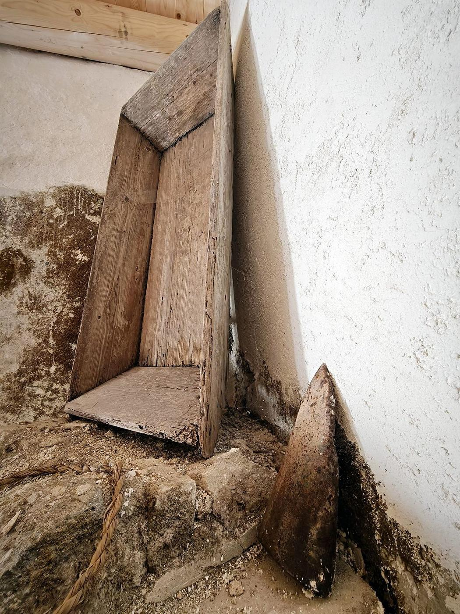

ITHE BOARD OF STONES
Set with stones, one by one.
A heavy wooden board studded with hundreds of small stones. Dragged over the wheat on the threshing floor, its stones separated the grain from the straw.
IITHE GRAIN CLEANER
Before the stone, the clean grain.
A machine that turns and sieves the wheat, removing dust, seeds and small stones before the grain reaches the mill.


IIITOOLS OF THE MILL
Wood, iron and terracotta.
The small tools that lived beside the millstones, found during the clearing or kept by the families who worked here.
